也紀念我們永遠的朋友 李士傑先生（Shih-Chieh Ilya Li）。
將 Ubuntu 上的多媒體檔案串流到 XBOX 360 上觀賞
你是否想用 XBOX 360 打造家中的媒體娛樂中心呢？許多 XBOX 的擁有者都是這麼想的。不過 XBOX 360 雖然可以播放外接裝置上的影片，但是支援的格式少之又少，看著電腦中琳琅滿目的影片格式，想到要轉檔就頭大，要是電腦中的影片能直接用 XBOX 360 在家裡客廳的大尺吋電視上播放就好了。
沒問題！我們只要在家中電腦架設一個 XBOX 360 可以讀取的媒體伺服器就行了！藉著自由軟體 uShare 和開放源碼系統 Ubuntu，我們可以用極低的價格打造家中的媒體伺服器，而且還不用考慮 Windows Media Player 的格式限制，因為 uShare 支援的多媒體格式實在太多了，不論你的影片格式為何，都可以無痛傳送到 XBOX 360 上觀賞。
Note
軟體小檔案
名稱：uShare
版本：1.1a
支援影片格式：asf, avi, dv, divx, wmv, mjpg, mjpeg, mpeg, mpg, mpe, mp2p, vob, mp2t, m1v, m2v, m4v, m4p, mp4ps, ts, ogm, mkv, rmvb, mov, qt, hdmov
支援音樂格式：aac, ac3, aif, aiff, at3p, au, snd, dts, rmi, mp1, mp2, mp3, mp4, mpa, ogg, wav, pcm, lpcm, l16, wma, mka, ra, rm, ram, flac
支援圖片格式：bmp, ico, gif, jpeg, jpg, jpe, pcd, png, pnm, ppm, qti, qtf, qtif, tif, tiff
安裝 uShare
1. 首先我們當然是要安裝 uShare 這個 UPnP 音訊／視訊多媒體伺服器。它已經包含在 Synaptic 套件管理程式中，因此我們只要打開 Synaptic 套件管理程式，然後在「Quick search」欄位輸入「ushare」，就可以看到 uShare 套件了。接著在 uShare 套件上按一下滑鼠右鍵，並選擇「標記為安裝」。
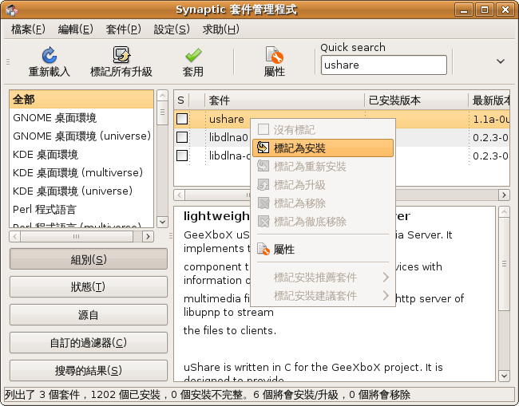
2. 接著 Synaptic 套件管理程式會提醒你 uShare 套件的相依性，我們只要在〔標記〕按鈕上按一下滑鼠左鍵，標記其它需要的變更即可。
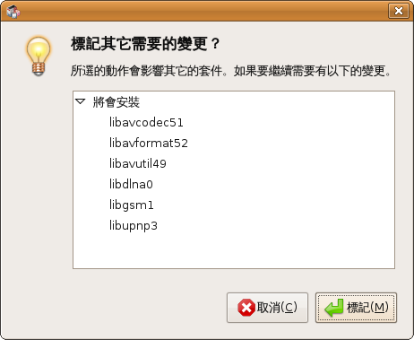
3. 標記所有需要的套件後，回到 Synaptic 套件管理程式主畫面中，按一下上方工具列的〔套用〕按鈕。
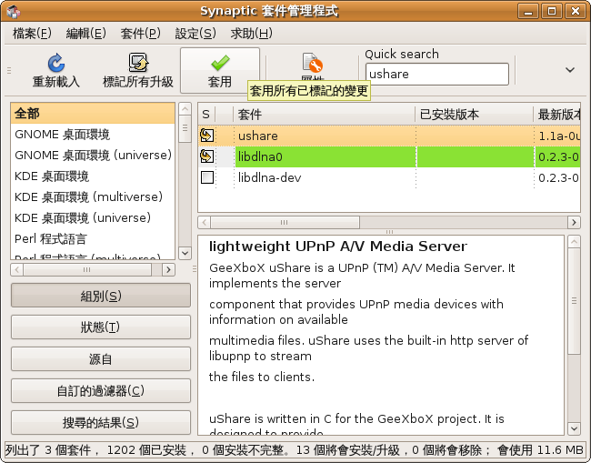
4. 之後 Synaptic 套件管理程式會顯示這次變更的摘要，請在〔套用〕按鈕上按一下滑鼠左鍵。
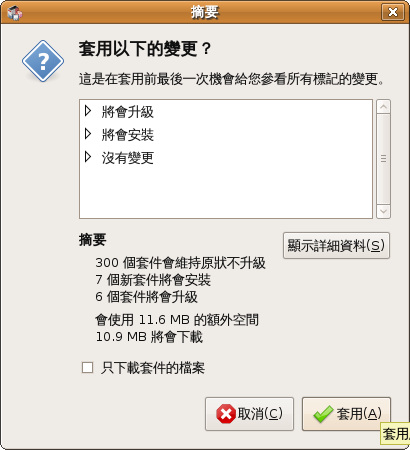
5. 接著你可以看到「套用變更」視窗，顯示軟體正在安裝。
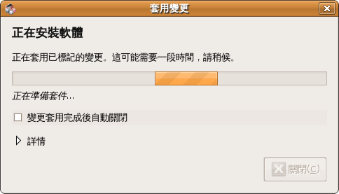
6. 安裝完成後，Synaptic 套件管理程式就會顯示「變更已套用」視窗，在〔關閉〕按鈕上按一下滑鼠左鍵即可完成 uShare 的安裝。
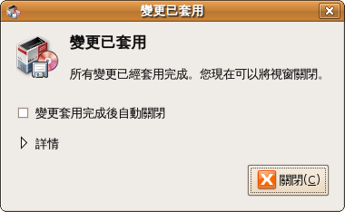
7. 你可以在 Synaptic 套件管理程式中，看到 ushare 套件前的空格已選取，表示安裝已經完成。
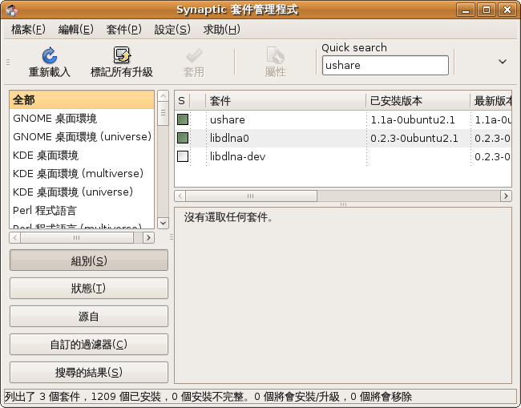
設定 uShare
1. 接下來我們要設定 uShare 所要分享的資料夾和網路設定，請開啟【附屬應用程式】中的【終端機】，然後輸入下列文字：
sudo dpkg-reconfigure ushare
2. 接著輸入管理者密碼後，你就可以看到 uShare 的設定畫面，首先我們要輸入在 UPnP 客戶端（在這裡就是指 XBOX 360）中要顯示的名稱。
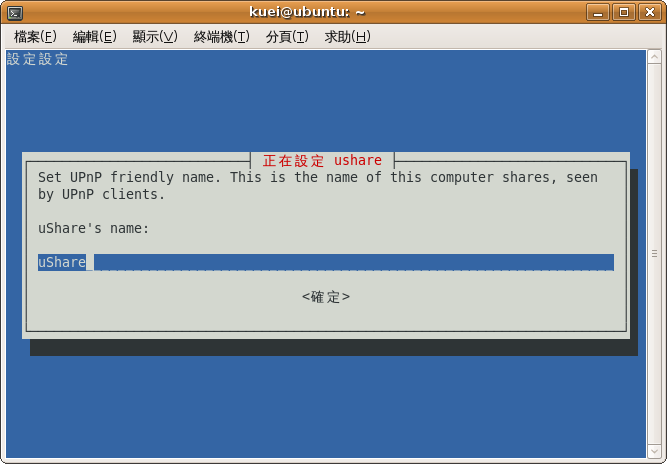
3. 然後我們要選擇 uShare 所要使用的網路介面，由於筆者使用無線網路和 XBOX 360 連接，因此在這裡我們選擇「wlan0」，如果使用有線網路，則選擇「eth0」。
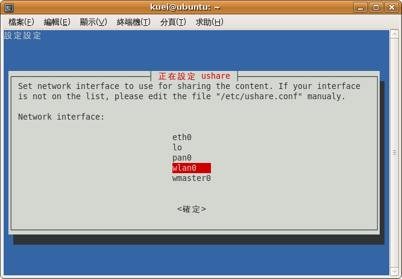
4. 接下來我們要設定所要分享的資料夾，請輸入多媒體所在的資料夾後，按一下「Enter」鍵即設定完成。
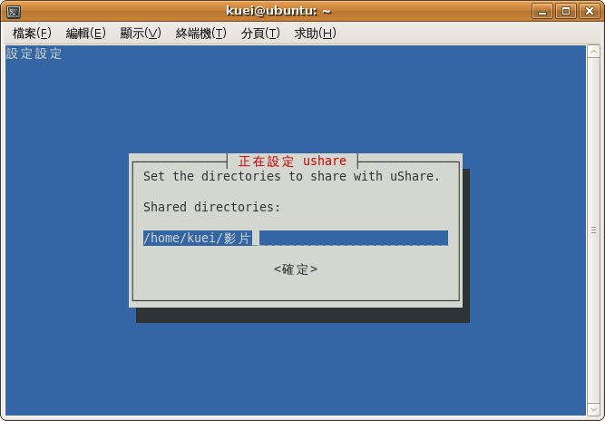
5. 設定完成後，我們可以在終端機中，用下列指令啟動 uShare，其中 -x 參數表示啟動 XBOX 支援：:
ushare -x -c /home/kuei/影片（或你分享的資料夾路徑）
在 XBOX 360 中觀賞 uShare 所分享的多媒體
1. 設定完成後，開啟你的 XBOX 360，然後在主畫面中，移到「我的 XBOX」->「影片庫」。
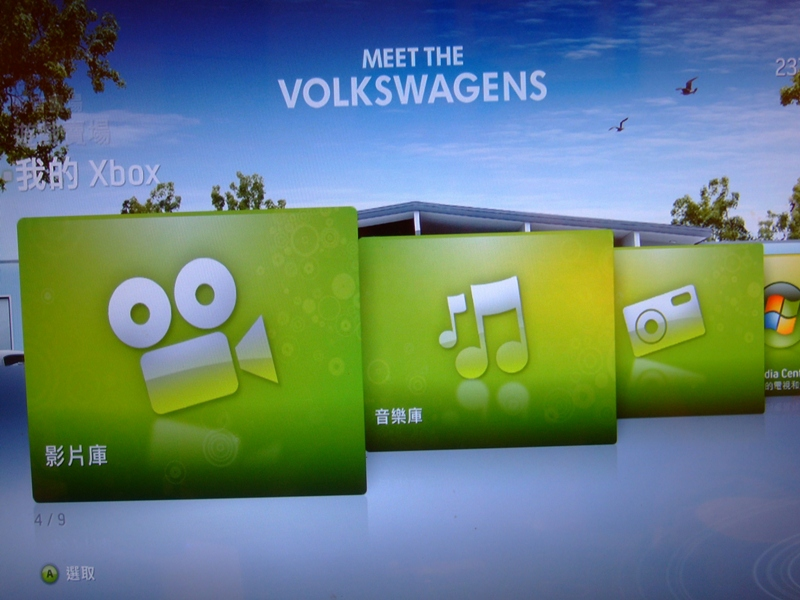
2. 你可以在「影片庫」中的選取來源畫面中，看到我們剛剛為 uShare 所取的名稱。
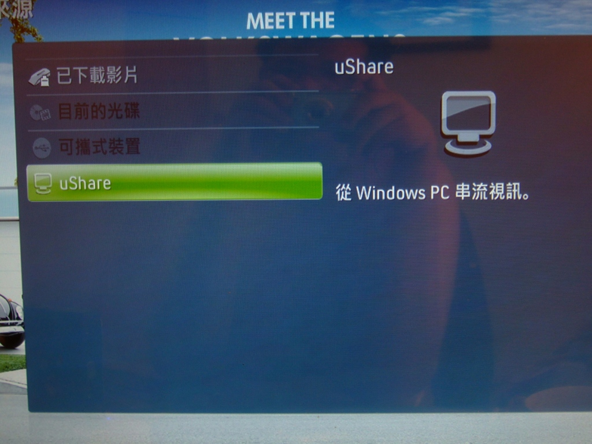
3. 進入 uShare 所分享出來的資料夾後，就可以看到裡面的影片了，選擇所要的影片即可開始播放。而音樂檔案和圖片則分別在「音樂庫」和「圖片庫」中，你可以相同的方式開啟所要的多媒體檔案。
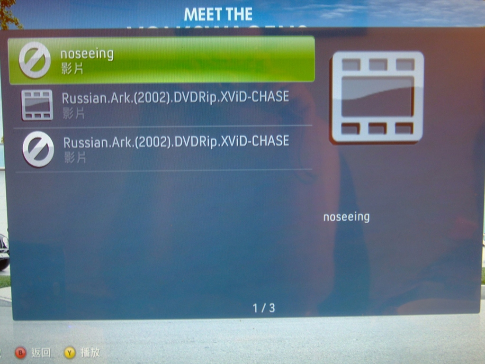
You may be interested in the following articles:
- 如何將 Ubuntu 字型美化 - 2009-01-15
Special


Address：No.128, Sec.2, Academia Rd., Institute of Information Science, Academia Sinica, Nangang District, Taipei City 11529, Taiwan (R.O.C).
Privacy Policy. Terms-of-use